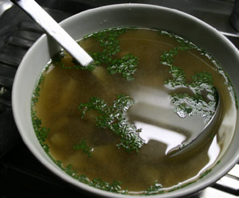

NASU no MISOSHIRU (Miso Suppe mit Auberginen)
6 von 61 Liter Wasser aufkochen. 1 Päckli Dashi no Moto sowie 2 El Misopaste beigeben. Beliebige Gemüse darin gar kochen.

1 Liter Wasser aufkochen. 1 Päckli Dashi no Moto sowie 2 El Misopaste beigeben. Beliebige Gemüse darin gar kochen.

Montagsplausch Nr. 169. Der Abend hiess «Japanisch Kochen Teil 1».